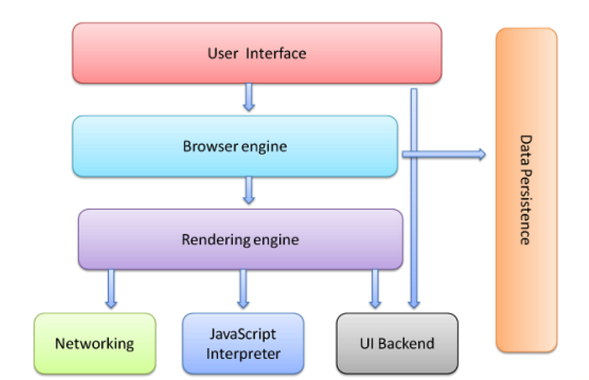
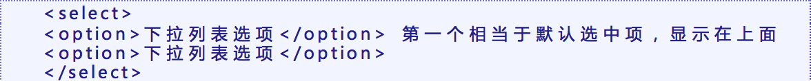

前端就是利用HTML+CSS+JS等技术，将效果图做成网页，适配PC端和移动端，满足用户的体验
认识网页网页主要由文字、图片和按钮等元素构成。当然，除了这些元素，网页中还可以包含音频、视频以及Flash动画等。
web的编写标准1：w3c 万维网联盟组织 用来制定web标准的机构（组织）PS: 百度好像是中国唯一一家加入万维网组织的互联网公司
2：web标准：制作网页要遵循的规范
3：web标准规范的分类：结构标准、表现标准、行为标准
4：结构： html 、表现： css 、 行为：javascript
因为我们的网页是显示在浏览器上的，所以就要搞清楚浏览器的工作原理/工作流程
1、User Interface 用户界面，我们所看到的浏览器
2、Browser engine 浏览器引擎，用来查询和操作渲染引擎
3、Data Persistence(持久化) 数据持久化，数据存储 cookie、HTML5中的sessionStorage
4、Rendering engine（渲染引擎） 用来显示请求的内容，负责解析HTML、CSS
5、Networking 网络，负责发送网络请求
6、JavaScript Interpreter(解析者，JS引擎) JavaScript解析器，负责执行JavaScript的代码
7、UI Backend UI后端，用来绘制类似组合框和弹出窗口
浏览器对网页的影响| 浏览器内核分成两部分渲染引擎和js引擎，由于js引擎越来越独立，内核就倾向于只指渲染引擎。 | |||
| IE | 谷歌/欧朋 | 火狐 | 苹果 |
| trident | blink | gecko | webkit |
|
渲染引擎是一种对HTML文档进行解析并将其显示在页面上的工具 渲染引擎决定了如何显示网页的内容，以及页面的格式信息。渲染引擎是兼容性问题出现的根本原因。 比如：谷歌的渲染引擎字体：宋体。火狐的字体：微软雅黑。这也是，前端非常常用的两种字体 PS:目前，国内没有一家浏览器是用的自己的渲染引擎，都是接入的国外的引擎 |
|||
| 协议规定格式： scheme://host.domain:port/path/filename | |
| secheme | 定义因特网服务的类型。常见的就是http |
| host | 定义域主机（http 的默认主机是www） |
| domain | 定义因特网域名 比如：w3school.com.cn |
| :port | 定义端口号（网页默认端口 :80） |
| path | 网页所在服务器上的路径 |
| filename | 文件名称 |
如果你的web要想让别人在网上访问到，那么首先，你需要有自己的服务器(公司的大型、自己电脑的小型都行)，然后将URL给别人即可
使网页可以被搜索引擎搜索到两种方法：
1. 主动去别人网站上填写一些信息，注册自己的网页，比如百度，有一个百度站长平台，进去登记一下
2. 在自己的网页，直接被别人用URL访问的时候，有可能会被搜索网站的爬虫抓取到
一般公司都是第一种，那么接着又有一个问题，怎么提高自己的网页在被搜索出来的时候，在同类网页中的排名？
SEO是指通过站内优化比如网站结构调整、网站内容建设、网站代码优化等以及站外优化，比如网站站外推广、网站品牌建设等，使网站满足搜索引擎收录排名需求，在搜索引擎中提高关键词排名，从而吸引精准用户进入网站，获得免费流量，产生直接销售或品牌推广。
别人搜索的时候，排名：排在最前的，当然一般都是付费的。付费后面的，是根据SEO(搜索引擎优化这个参数)来决定的。
至于具体怎么提高SEO流量，提高排名，那就不是码农的事情了，这应该是做营销的人的业务了。
html (Hyper Text Markup Language)中文译为“超文本标记语言”，(有超级文本，超越文本的意思)主要是通过html标记对网页中的文本，图片，声音等内容进行描述
HTML之所以称为超文本标记语言，不仅是因为他通过标记描述网页内容，同时也由于文本中包含了所谓的“超级链接”，通过超链接可以实现网页的跳转。从而构成了丰富多彩的Web页面。
HTML发展Html 与htm是一样的。(在以前，电脑不发达，dos系统只能识别三个字母的后缀名，所以是htm，后来随着发展，就补全了，HTML)
后缀名不能决定文件格式，只能决定打开文件打开的方式。
HTML一直从1.0发展到4.0，在当时还没HTML5的时候，一些设计师，感觉到XML的灵活性，和功能强大，可以直接操作数据库，写游戏。就想让HTML过渡到XML，但是XML一些人感觉太难学， XHTML就这样出来了，具备一些XML的特性。(不过后来HTML5出来，这个过渡也就被搁置了)
XHTML，规定了三种XML文档类型DTD(文档类型定义)：Strict(严格型)，Transitional(过渡型)，frameset(用的就很少了)
Dw 历史悠久，偏设计师使用。
Sublime 轻量级 有很多好用的插件。基础使用
Webstorm 重量级 太过智能。进阶使用
刚开始，我们用sublime，首先，我们需要安装一些插件，安装任何插件之前，我们需要安装package control 。然后有一个插件叫做emmet。Emmet里面包括许多emmet语法，比如：html:xt,html:xs, ! , table>tr*3>td*3,按tab键补全。
其他的软件，还有，比如：HBuilder、vscode、atom、brackets等
代码块与Xcode相同，Sublime、Webstorm也提供有代码块的功能
Sublime
英文版tool->developer->new snippets，文件保存的时候，后缀需要为 .sublime-snippet
中文版:工具->新代码段
Webstorm
选中代码段，菜单->工具，保存为活动模板
代码块中的占位符 $INDEX$
| Html+tab/!+tab | HTML标准结构代码(后者是emmet插件语法) |
| tab | 补全标签代码 |
| command+shift+D | 快速复制一行 |
| command+shift+delete command+delete |
快速删除一行 |
| command+鼠标左键单击 | 可以让几个标记同时闪烁输入光标 也就是集体输入 |
| command+option+f | 查找替换 |
| command+f | 查找 |
| command+/ | 注释 |
| command+L | 快速选择一行 |
| Command+shift+左/右箭头 | 快速选择光标左/右边的东西 |
| 选中+command+[ ] | 将选中的左/右 移动 |
| view-layout-可以分成两列、行看两个项目 | |
|
新建文件：1. 工具栏点击新建，最后需要设置保存位置。2. 打开文件夹，右击文件夹新建文件，直接保存在当前文件夹。推荐后者 打开文件：可以选择打开最近的某个文件，也可以选择打开某个文件夹，后者会将整个文件夹内的HTML文件全部找到罗列出来 最后保存文件的时候，文件名要加上后缀.html(跟xcode不一样，因为sublime还可以写.css .js，所以要指定) 如果不先保存，有些快捷键不自动补全 |
|
| 写法 | 内容 | |
|---|---|---|
| html | !+tab | 生成HTML5标准结构代码 |
| 标签名.类名/标签名#id名+tab | 生成相应控制器，不写标签名，默认div | |
| 标签名+标签名 | 生成同级元素 | |
| 标签名>标签名 | 生成父子嵌套标签 | |
| 标签名>标签名^^标签名>标签名 |
^跳到前面的标签的上一级。类似文件路径中的../ 可以^^、^^^连跳，但是跳的最高等级不能超过第一个标签的层级 |
|
| ul>li*5+tab | 生成固定数量的子标签 | |
| ul>li>a[]{item}*5 | 生成带内容、属性的标签。[]内写属性，{}内写内容 | |
| ul>li.abc${$}*3 + tab | $是一个占位符，当生成好几个同类标签，在该处，从零依次变成数字 | |
| CSS | w30+tab | width:30px; |
| h30+tab | height:30px; | |
| mg30+tab | margin:30px; | |
| pd30+tab | padding:30px; | |
| lh12px+tab | Line-height:12px; | |
| bg+ +tab | background: #fff url() 0 0 no-repeat; | |
| bd+ +tab | border: 1px solid #000; | |
| f+ +tab | font: 1em Arial, sans-serif; | |
| 最后三个，如果不加+号，后面的内容不会出现 | ||
| emmet是我们在sublime中的一个插件，在这个插件中集成很多的快捷键。webstorm中自动就包括这个插件 | ||
在sublime中
html:xt + tab(快捷创建的HTML结构就是过渡型的)
html:xs + tab(创建的就是严格型的)(在语法和代码书写上比过渡性严格一些)
第一天都是使用html:xt创建的过渡型的版本(参考老师上课的项目，doctype html那一行里面会有xhtml1 – transitional.dtd) 标准结构
现在随着HTML5的出现，我们可以直接创建HTML5版本的(就直接)，快捷键： ！+ tab(需要安装emmet插件，emmet语法) 标准结构
声明文档类型(对渲染引擎声明)
<html><html> 称为根标记，用于告知浏览器其自身是一个 HTML 文档， <html> 标记标志着HTML文档的开始，</html> 标记标志着HTML文档的结束，在他们之间的是文档的头部和主体内容。
<html lang="en">向搜索引擎表示该页面是html语言，并且语言为英文网站，其"lang"的意思就是“language”，语言的意思，而“en”即表示english
这个主要是给搜索引擎看的，搜索引擎不会去判断该站点是中文站还是英文站，所以这句话就是让搜索引擎知道，你的站点是中文站，对html页面本身不会有影响
<head>标记，以及写在<head>标记内的标记用于定义HTML文档的头部信息，也称为头部标记，紧跟在<html> 标记之后，主要用来封装其他位于文档头部的标记。
一个HTML文档只能含有一对<head> 标记，绝大多数文档头部包含的数据都不会真正作为内容显示在页面中。
<meta>标记meta: 元数据（Metadata），又称中介数据、中继数据，为描述数据的数据（data about data），主要是描述数据属性（property）的信息，用来支持如指示存储位置、历史数据、资源查找、文件记录等功能
<meta>标签是提供html文档的元数据。元数据不会在网页上显示出来，是对机器可读的。典型的就是通过meta标签可以设置网页的关键字，网页描述，文档作者等。
meta 的属性有两种：name和http- equiv。
name
name属性主要用于描述网页，搭配content（网页内容)一起使用 <meta name="键值" content="...">
| name键的类型 | content内容 | 用途 |
| keywords | ...... | 向搜索引擎说明你的网页的关键词 |
| description | ...... | 告诉搜索引擎你的站点的主要内容 |
| generator | ...... | 用以说明生成工具 |
| author | 姓名 | 告诉搜索引擎你的站点的制作的作者 |
| robots | all | 文件将被检索，且页面上的链接可以被查询 |
| none | 文件将不被检索，且页面上的链接不可以被查询 | |
| index | 文件将被检索 | |
| noindex | 文件将不被检索，但页面上的链接可以被查询 | |
| follow | 页面上的链接可以被查询 | |
| nofollow | 文件将不被检索，页面上的链接可以被查询 |
补充：
关键字keywords：给搜索引擎看的，别人搜索某个词汇的时候，搜索引擎搜索这个关键字，而且网页优化SEO做的越好，搜索出来越靠前
<meta>description的显示效果
http-equiv
http-equiv也是需要搭配参数content一起使用 <meta http-equiv="键值" content="...">
| http-equiv键的类型 | content内容 | 用途 |
| Content-Type | content="text/html;charset="UTF-8"" | 定义当前网页格式，以及编码格式 |
| Refresh | content="秒数;url=""" | 网页重定向，多少秒之后跳转content中的URL |
常用的两个重点用途
link链接外部样式表：<link rel="stylesheet" href="某个CSS文件路径"
link设置网页title名字前面显示的图标：<link rel="icon" href="图片路径"
<title> 标记用于定义HTML页面的标题，即给网页取一个名字，必须位于<head> 标记之内。一个HTML文档只能含有一对<title> </title> 标记，<title> </title> 之间的内容将显示在浏览器窗口的标题栏中。其基本语法格式如下：<title> 网页名称</title>
用于定义HTML文档所要显示的内容，也称为主体标记。浏览器中显示的所有文本、图像、音频和视频等信息都必须位于<body> 标记内，<body> 标记中的信息才是最终展示给用户看的。
一个HTML文档只能含有一对<body> 标记，且<body> 标记必须在<html> 标记内，位于<head> 头部标记之后.
下面我们要讲的标签都是写在<body>中的
标签其实和标记算是一个意思，两种叫法而已。
html中叫标签/标记 -- 对应js中的元素节点
标签分类标签的分类：单标签、双标签
标签之间的关系：并列、嵌套
标签语义化好的语义化的网站标准就是去掉样式表文件之后，结构依然很清晰。
概念
根据内容的结构化（内容语义化），选择合适的标签（代码语义化）
-标签语义化意义：
1:网页结构合理
2:有利于SEO：和搜索引擎建立良好沟通，有了良好的结构和语义你的网页内容自然容易被搜索引擎抓取；
爬虫：是一种按照一定的规则，自动地抓取万维网信息的程序或者脚本
3:方便其他设备解析（如屏幕阅读器、盲人阅读器、移动设备）
4:便于团队开发和维护
让浏览器更可读、写代码的时候看着更清晰
1：尽可能少的使用无语义的标签div和span；
div就是一个盒子，span就是一个行内元素，可以给文字、图片加span，用span可以修饰里面的内容，但是它自己是没有任何语义的。
2：在语义不明显时，既可以使用div或者p时，尽量用p, 因为p在默认情况下有上下间距，对兼容特殊终端有利；
3：不要使用纯样式标签，如：b、font、u等，改用css设置。
4：需要强调的文本，可以包含在strong或者em标签中strong默认样式是加粗（不要用b），em是斜体（不用i），下划线是ins（不用u）；
5：导航栏用li，更有语义化然后转行内块或者浮动也行，
单标记也称空标记，是指用一个标记符号即可完整地描述某个功能的标记。其基本语法格式如下：<标记名/>
在网页中常常看到一些水平线将段落与段落之间隔开，使得文档结构清晰，层次分明。这些水平线可以通过插入图片实现，也可以简单地通过标记来完成，<hr/>就是创建横跨网页水平线的标记。其基本语法格式如下：
书写格式：<hr/>
显示效果
在HTML中，一个段落中的文字会从左到右依次排列，直到浏览器窗口的右端，然后自动换行。如果希望某段文本强制换行显示，就需要使用换行标记<br/>，这时如果还像在word中直接敲回车键换行就不起作用了。
在HTML中还有一种特殊的标记——注释标记。如果需要在HTML文档中添加一些便于阅读和理解但又不需要显示在页面中的注释文字，就需要使用注释标记。其基本语法格式如下：
注释内容不会显示在浏览器窗口中，但是作为HTML文档内容的一部分，也会被下载到用户的计算机上，查看源代码时就可以看到。
注释标记：
html中
只有：<!--注释-->
css中
只有 /*注释*/
js中
单行注释：//注释
多行注释：/* 注释 */
快捷键都是： Ctrl + /
HTML网页中任何元素的实现都要依靠HTML标记，要想在网页中显示图像就需要使用图像标记，接下来将详细介绍图像标记<img/>以及和他相关的属性。其基本语法格式如下：
<img src="">
属性该语法中src属性用于指定图像文件的路径和文件名，他是img标记的必需属性。
| src | 是个URL | 图像的路径 |
| alt | 文字内容 | 图片不能显示时候的替换文本 |
| title | 文本内容 | 鼠标悬停在图片上时的文本 |
| width | 像素（XHTML不支持%页面百分比） | 图片的宽度 |
| height | 像素（XHTML不支持%页面百分比） | 图片的高度 |
| 图片没有定义宽高的时候，图片按照百分之百比例显示，如果只更改图片的宽度或者高度，图片等比例缩放。 | ||
相对路径：相对路径不带有盘符，通常是以HTML网页文件为起点，通过层级关系描述目标图像的位置。
例如：
<img src="img/logo.gif">
相对路径设置一般分为三种：
图像文件和html文件位于同一文件夹：只需输入图像文件的名称即可
如<img src="logo.gif">
图像文件位于html文件的下一级文件夹：输入文件夹名和文件名，之间用“/”隔开
如<img src="img/img01/logo.gif">
图像文件位于html文件的上一级文件夹：在文件名之前加入“../” ，如果是上两级，则需要使用 “../ ../”，以此类推
如<img src="../logo.gif">
绝对路径：绝对路径一般是指带有盘符的路径。
例如：
<img src="D:\HTML+CSS网页制作\chapter02\img\logo.gif">
在HTML5之前，我们都是使用embed、object标签，来盛放音视频，然后嵌入flash，这种手段来播放视频的。html5之后，增加了标签，但是由于兼容性，我们还是需要了解embed、object标签的
<embed src="" hidden="true/false">
hidden，如果不设置，就会在这个标签的地方，显示一个播放器设置了hidden，播放器就隐藏了，只播放音乐
双标记也称体标记，是指由开始和结束两个标记符组成的标记。其基本语法格式如下：<标记名></标记名>
该语法中“<标记名>”表示该标记的作用开始，一般称为“开始标记（start tag）”，“</标记名>”
表示该标记的作用结束，一般称为“结束标记（end tag）”。和开始标记相比，结束标记只是在前面加了一个关闭符“/”。
为了使网页更具有语义化，我们经常会在页面中用到标题标记，HTML提供了6个等级的标题，即<h1>、<h2>、<h3>、<h4>、<h5>和<h6>，从<h1>到<h6>重要性递减。
h1 在一个页面里只能出现一次，H2和h6不限。出于SEO 搜索引擎优化，这是常识
在网页中要把文字有条理地显示出来，离不开段落标记，就如同我们平常写文章一样，整个网页也可以分为若干个段落，而段落的标记就是<p>
<p>是HTML文档中最常见的标记，默认情况下，文本在一个段落中会根据浏览器窗口的大小自动换行。<bt/>不行
多种多样的文字效果可以使网页变得更加绚丽，为此HTML提供了文本样式标记<font>，用来控制网页中文本的字体、字号和颜色。其基本语法格式如下：<font></font>
早期用这个，现在一般都有样式表
在网页中，有时需要为文字设置粗体、斜体或下划线效果，这时就需要用到HTML中的文本格式化标记，使文字以特殊的方式显示。
href 去往的路径（跳转的页面） 必写属性
title 提示文本 鼠标放到链接上显示的文字，一般都不用写
target=”_self” 默认值 在自身页面打开（关闭自身页面，打开链接页面）
target=”_blank” (用的较多)打开新页面 （自身页面不关闭，打开一个新的链接页面）
1.跳转网页
2.锚链接
Ⅰ.先定义一个锚点：给一个标记设置id
Ⅱ.超链接到锚点
3.空链
不知道链接到那个页面的时候，又因为href是必须要写的属性，这个时候就要用空链#
4.压缩文件下载
不推荐使用
超链接优化写法<base target="_blank"> 写在<head>中，意思是：让所有的超链接都在新窗口打开
注意:暂时没有确定链接目标时，通常将标记的href属性值定义为“#”(即href="#")，表示该链接暂时为一个空链接。
不仅可以创建文本超链接，在网页中各种网页元素，如图像、表格、音频、视频等都可以添加超链接。
列表:一种包含文字或者图片的容器。可以让文字或者图片有规律的整齐的排列显示。
在下面，我们会讲到"列表项目符号"，通过type来设置，不过在学完CSS后，我们一般都是通过CSS来设置的。
无序列表的各个列表项之间没有顺序级别之分，是并列的。其基本语法格式如下：
无序列表中type属性的常用值有三个，它们呈现的效果不同.
默认值:disc
方块:square
空心圆:circle
有序列表即为有排列顺序的列表，其各个列表项按照一定的顺序排列定义，有序列表的基本语法格式如下：
type="1,a,A,i,I"
start=".."(不管type是什么，这个都是阿拉伯数字) 决定了开始的字符。
定义列表常用于对术语或名词进行解释和描述，定义列表的列表项前没有任何项目符号。其基本语法如下：
生活中会遇到哪些表格 （课程表,值日表…）。用途：展示数据。是对网页重构( CSS+div )的一个有益补充。
表格的呈现形式：在使用表格进行布局时，可以将表格划分为头部、主体和页脚，具体 如下所示：
<thead></thead>：用于定义表格的头部，必须位于<table></table>标记中，一般包含网页的logo和导航等头部信息。
<tfoot></tfoot>：用于定义表格的页脚，位于<table></table>标记中<thead></thead>标记之后，一般包含网页底部的企业信息等。
<tbody></tbody>：用于定义表格的主体，位于<table></table>标记中<tfoot></tfoot>标记之后，一般包含网页中除头部和底部之外的其他内容。
注意：1：<thead>、<tbody> 以及 <tfoot> 很少被使用，这是因为糟糕的浏览器支持。
2：如果使用 thead、tfoot 以及 tbody 元素，就必须使用全部的元素。它们的出现次序是：thead、tfoot、tbody
<caption></caption> 写在紧随<table>的下面一行，就是在表格的上面加了一行字，区别<thead>，后者就是在单元格最上面加了一行表格
一个表格只能有一个表头
<th></th>用法和td一样，表现形式：标题的文字自动加粗水平居中对齐
colspan=”2” 合并同一行上的单元格，找到想合并的那几个单元格最左边那一个，写上这句话
rowspan=”2” 合并同一列上的单元格，找到想合并的那几个单元格最上边的哪一个，写上这句话
注意：我们想合并几个单元格就将数字改成几，另外需要注意的一点是：记得将原先那个位置上的单元格如下图，给注释掉，否则，就被挤到其他地方了，就乱了
注意: border是设置的每个单元格边框以及最外面表格的宽度，最小值为1，这个时候，我们设置cellspacing = 0 ,这样相邻单元格的边框紧挨着，线的宽度就变成了2。
所以，设置属性的方法，就实现不了 “细线表格”
实现思路：不要边框，分别在<table>、<tr>中设置整个表格、单元格的背景颜色，然后设置cellspacing = 1。此处有个课程表表格的案例
收集信息。对比于表格的展示信息。语法格式：<form></form>
表单的组成:表单标签form+提示信息+表单域(input/textarea/select)它相当于一个容器，用来容纳所有的表单控件，和提示信息，可以通过他定义处理表单数据所用程序的url地址，以及数据提交到服务器的方法。如果不定义表单域，表单中的数据就无法传送到后台服务器。
语法上就是form的两个属性决定的：action,Method
action: 指定表单处理程序的位置(服务器端脚本处理程序) ，信息传给谁
Method=”get | post”
Get通过地址栏提供（传输）信息，安全性差。
Post 通过1.php来处理信息，安全性高。
提示信息表单控件之前的一些文字
表单域：| 属性 | 属性值 | 描述 | 表现样式 | 说明补充 |
|---|---|---|---|---|
| type | text | 单行文本输入框，输入是明文 | 1.一般会搭配maxlength属性一起用 2.设置size属性，可以改变控件宽度 3.设置value属性，可以起到占位符的作用 |
|
| password | 密码输入框，输入是暗文 | |||
| radio | 单选按钮 | 男 女 | 1.只有当name，设置相同的时候，才能实现单选 2.checked="checked"设置默认选中项，后设置的生效 |
|
| checkbox | 多选/复选框 | 读书 看报 |
1.name相同时，达到多选效果 2.checked="checked"设置默认选中项 |
|
| file | 文本上传按钮/文件域 | 样式固定，宽度固定 | ||
| submit | 提交按钮 | value设置字体，宽度自适应 | ||
| button | 普通按钮 |
同上。不能提交信息，需要配合JS使用 显示效果：同<button>我是button</button>是一样的 |
||
| image | 图片提交按钮 | 没有小图，暂定搁置 | 大小根据图片自适应。能提交信息 | |
| reset | 重置按钮 | value设置字体，宽度自适应 | ||
| hidden | 隐藏域 | 隐藏了输入框，name自己设置，value通过默认赋值或者JS来获取 | ||
| name | 开发者自定义 | 控件的名称 | 这是input控件的两个核心属性，最后提交的时候，name对应value，传值给action | |
| value | 自定义/用户输入 | 控件的值 | ||
| size | 正整数 | 控件的宽度 | 这些属性，需要搭配不同的type类型，来使用。并不是<input>的通用属性 | |
| disabled | disabled | 禁用该控件 | ||
| readonly | readonly | 设置控件为只读 | ||
| checked | checked | 设置默认选中项 | ||
| maxlength | 正整数 | 控件的最大输入数 | ||
<label> 标签为 input 元素定义标注（标记）。
label 元素不会向用户呈现任何特殊效果。不过，它为鼠标用户改进了可用性。如果您在 label 元素内点击文本，就会触发此控件。就是说，当用户选择该标签时，浏览器就会自动将焦点转到和标签相关的表单控件上。
使用方式：label for id
label绑定input控件，点击label，帮助input控件，获取：focus键盘输入焦点
<label for="username">点击label</label><input type="text" id="username">
显示效果:
占位符：input有placehold属性，但是不建议用，说是ie不兼容这个属性
语法格式：
显示效果：
<select>属性：size 下拉列表的可见选项数
Multiple=”multiple” 将下拉列表设置为多选项，按住common/ctrl多选
<option>属性：Selected=”selected” 设置默认选中项目，默认显示在这个控件上的值
下拉列表分组<optgroup label = “分组名称”></optgroup> 对下拉列表的选择项们进行分组，写在<select></select>内，<option></option>外面。
<textarea cols="10" rows="1"></textarea>
表现样式： 属性：Cols 控制输入字符的长度，也就是宽度
Rows 控制该控件能显示的行数，多就是高度
添加滚动条: <textarea style="scrollbar:overflow"></textarea>
显示效果：
就是将<fieldset>中的标签，用一个线条宽度大约为1的长方形圈起来。<legend>内的”名称”显示在左上角
<fieldset></fieldset> 对表单信息分组
<legend></legend> 表单信息分组名称
1. 在Safari中查看有的无效，在谷歌浏览器中看的
网址、邮箱只能输入相应的。否则，会提示错误。但是有个bug，空也能提交，而且不会提示。
2.
网址控件：<input type="url">
日期控件：<input type="date">
时间控件：<input type="time">
数字控件：<input type="number" step="5">
设置step属性= 5，那么输入的数字只能是5的倍数，右边的调节箭头，每次改变的量都是5。默认是1.
滑块控件 <input type="range">
也有step属性，如果为50,那一滑就是50
页面自动滚动效果之：<marquee>...</marquee>
中间的内容可以为 文字，图片，也可以是由程序生成的文字或图片
| height | 设置滚动区域的高度，scrollView.frame.height | |
| width | 设置滚动区域的宽度，scrollView.frame.width | |
| bgcolor | 设置背景颜色 | |
| loop | 设置滚动次数，=-1一直滚下去 | |
| behavior | 设定滚动的方式 | |
| alternate | 右到左，左到右，重复 | |
| scroll | 右到左，右到左，会重复 | |
| slide | 右到左，然后停在左边，不会重复 | |
| direction | 设定滚动的方向 | |
| down | 向下滚动 | |
| left | 向左滚动 | |
| right | 向右滚动 | |
| up | 向上滚动 | |
计算机中储存的信息都是用二进制数表示的；而我们在屏幕上看到的英文、汉字等字符是二进制数转换之后的结果。通俗的说，按照何种规则将字符存储在计算机中，如'a'用什么表示，称为"编码"；反之，将存储在计算机中的二进制数解析显示出来，称为"解码"，如同密码学中的加密和解密。在解码过程中，如果使用了错误的解码规则，则导致'a'解析成'b'或者乱码。
字符集(charset)
下面是一些常见的编码库，是个一个个的库
| Ascll | |
| Ansi | 这两个是刚开始的编码格式，只支持数字和英文 |
| Gb2312 | 简体中文 |
| Big5 | 繁体中文 |
| Gbk | 包括gb2312全部中文，还有繁体，字符等 |
| Unicode | 统一码，万国码，单一码 |
| Utf-8 | 通用字符集，支持180-200个国家的语言 |
| UTF-8以字节为单位对Unicode进行编码。 | |
最初是ASCII码，只有128个，满足不了我们的需求，逐渐扩展到现在Unicode(万国码，统一的语言二进制编码)，现在是UTF-8、16后面的编码都是有ASCII演变过来的，都包含ASCII
不同的编码方式中，一个英文/中文字符占用的字节数也是不一样的字符是指计算机中使用的字母、数字、字和符号，包括：1、2、3、A、B、C、~！·#￥%……—*（）——+等等。
在 ASCII 编码中，一个英文字母字符存储需要1个字节。
在 GB 2312 编码或 GBK 编码中，一个汉字字符存储需要2个字节。
在UTF-8编码中，一个英文字母字符存储需要1个字节，一个汉字字符储存需要3到4个字节。
在UTF-16编码中，一个英文字母字符或一个汉字字符存储都需要2个字节（Unicode扩展区的一些汉字存储需要4个字节）。
在UTF-32编码中，世界上任何字符的存储都需要4个字节